import numpy as np
import pandas as pd
import matplotlib.pyplot as plt
import re
import seaborn as sns
from sklearn.model_selection import train_test_split
from sklearn.compose import ColumnTransformer
from sklearn.pipeline import Pipeline
from sklearn.preprocessing import OneHotEncoder, StandardScaler
from sklearn.impute import SimpleImputer
from sklearn.base import clone
from sklearn.model_selection import GridSearchCV
# Models (Regression)
from sklearn.linear_model import LinearRegression, PoissonRegressor
from sklearn.neighbors import KNeighborsRegressor
from sklearn.svm import SVR
from sklearn.tree import DecisionTreeRegressor
from sklearn.ensemble import RandomForestRegressor
from sklearn.neural_network import MLPRegressor
import statsmodels.api as sm
from statsmodels.discrete.count_model import ZeroInflatedPoisson
# Models (Classification)
from sklearn.linear_model import LogisticRegression
from sklearn.neighbors import KNeighborsClassifier
from sklearn.svm import SVC
from sklearn.tree import DecisionTreeClassifier
from sklearn.ensemble import RandomForestClassifier
from sklearn.neural_network import MLPClassifier
# Metrics
from sklearn.metrics import (
mean_absolute_error, r2_score, mean_squared_error,
accuracy_score, precision_score, recall_score, f1_score, roc_auc_score,
confusion_matrix, ConfusionMatrixDisplay, roc_curve, average_precision_score, root_mean_squared_error
)
from scipy.stats import spearmanr
from statsmodels.stats.outliers_influence import variance_inflation_factor
from adjustText import adjust_textZero-Inflated Poisson Modeling of NCAA Postseason Awards
Authors: Kyle Bresko, Charles Lane, Kaleb Treangen
Course: DATA 4990 — Capstone
Department: School of Data Science and Analytics, Kennesaw State University
Term: Spring 2026
This notebook contains the analysis code for our capstone project. We model individual player award counts in NCAA Conference USA men’s basketball using game-level box score statistics. A Zero-Inflated Poisson (ZIP) regression is employed to handle the excess zeros inherent in award count data, and model performance is evaluated against several baseline regressors using Spearman rank correlation.
Summary
Objective
This project predicts individual player award counts for NCAA Conference USA men’s basketball using game-level box score statistics. The goal is to identify which statistical performance metrics best predict end-of-season award recognition.
Data
- Box scores were collected via the ncaahoopR R package for three Conference USA seasons: 2023-24, 2024-25, and 2025-26.
- Awards data was gathered from conference award announcements for the same seasons.
- Player names were normalized and matched across both sources. Coach awards were excluded.
Feature Engineering
- Per-game statistics were aggregated at the player-season level, including points, rebounds, assists, steals, blocks, field goals, free throws, and turnovers.
- Derived features include shooting efficiency, usage rate, and team-level totals (FGA, FTA, TOV).
- Features were standardized using StandardScaler prior to modeling.
Train/Test Split
- Training: 2023-24 and 2024-25 seasons
- Testing: 2025-26 season
Modeling
- Several regression models were evaluated via grid search with cross-validation, including Linear Regression, Poisson Regression, Ridge, Lasso, Random Forest, Gradient Boosting, and KNN.
- A Zero-Inflated Poisson (ZIP) model was selected as the primary model to account for the large number of players who receive zero awards (excess zeros in the target distribution).
- Model diagnostics included VIF checks for multicollinearity and a dispersion test comparing Poisson vs. Negative Binomial assumptions.
Evaluation
- Models were compared using Spearman rank correlation, which measures how well predicted values preserve the relative ordering of players by award count.
- The ZIP model was benchmarked against the sklearn regression candidates.
- Residual plots and actual-vs-predicted scatter plots were used for visual assessment.
Predictions and Analysis
- The ZIP model generated predicted award counts for all players in the 2025-26 test season.
- Rolling prediction windows and games-to-date analyses tracked how player rankings evolved over the course of the season.
- Key players such as R. Johnson, Z. Cleveland, C. Bliss, and K. Natt were profiled across game windows to observe prediction stability.
Imports
Config
%matplotlib inline
# For reproducibility in models that accept random_state
RANDOM_STATE = 42Load Data
Data Sources
- Boxscore information was gathered using R module ncaahoopR available at https://github.com/lbenz730/ncaahoopR
- Award Count was gathered from counting number of awards based on https://www.sports-reference.com/cbb/awards/
# Define a map for both school names and what seasons they played
# We use this to determine what teams are in conference usa for each season.
schools = pd.DataFrame({
"School": [
"FIU", "Jacksonville St", "LA Tech", "Liberty", "Mid Tennessee",
"New Mexico St", "Sam Houston", "UTEP", "W Kentucky",
"Kennesaw State", "Delaware", "Missouri State"
],
"23-24": [
True, True, True, True, True,
True, True, True, True,
False, False, False
],
"24-25": [
True, True, True, True, True,
True, True, True, True,
True, False, False
],
"25-26": [
True, True, True, True, True,
True, True, True, True,
True, True, True
]
})
display(schools)| School | 23-24 | 24-25 | 25-26 | |
|---|---|---|---|---|
| 0 | FIU | True | True | True |
| 1 | Jacksonville St | True | True | True |
| 2 | LA Tech | True | True | True |
| 3 | Liberty | True | True | True |
| 4 | Mid Tennessee | True | True | True |
| 5 | New Mexico St | True | True | True |
| 6 | Sam Houston | True | True | True |
| 7 | UTEP | True | True | True |
| 8 | W Kentucky | True | True | True |
| 9 | Kennesaw State | False | True | True |
| 10 | Delaware | False | False | True |
| 11 | Missouri State | False | False | True |
Import Boxscores
# This function takes a string for the desired season
# parameter two is the map created in the previous cell
def import_season(season, schools):
boxscores = {}
for school in schools['School'][schools[season]]:
boxscores[school] = pd.read_csv(f'../data/boxscores/{school}_20{season}.csv')
print(f"Season {season} for \"{school}\" imported.")
boxscores_all = pd.concat(boxscores.values(), ignore_index=True)
return boxscores_all# import the boxscores for target seasons
boxscores_24 = import_season('23-24', schools)
boxscores_25 = import_season('24-25', schools)
boxscores_26 = import_season('25-26', schools)Season 23-24 for "FIU" imported.
Season 23-24 for "Jacksonville St" imported.
Season 23-24 for "LA Tech" imported.
Season 23-24 for "Liberty" imported.
Season 23-24 for "Mid Tennessee" imported.
Season 23-24 for "New Mexico St" imported.
Season 23-24 for "Sam Houston" imported.
Season 23-24 for "UTEP" imported.
Season 23-24 for "W Kentucky" imported.
Season 24-25 for "FIU" imported.
Season 24-25 for "Jacksonville St" imported.
Season 24-25 for "LA Tech" imported.
Season 24-25 for "Liberty" imported.
Season 24-25 for "Mid Tennessee" imported.
Season 24-25 for "New Mexico St" imported.
Season 24-25 for "Sam Houston" imported.
Season 24-25 for "UTEP" imported.
Season 24-25 for "W Kentucky" imported.
Season 24-25 for "Kennesaw State" imported.
Season 25-26 for "FIU" imported.
Season 25-26 for "Jacksonville St" imported.
Season 25-26 for "LA Tech" imported.
Season 25-26 for "Liberty" imported.
Season 25-26 for "Mid Tennessee" imported.
Season 25-26 for "New Mexico St" imported.
Season 25-26 for "Sam Houston" imported.
Season 25-26 for "UTEP" imported.
Season 25-26 for "W Kentucky" imported.
Season 25-26 for "Kennesaw State" imported.
Season 25-26 for "Delaware" imported.
Season 25-26 for "Missouri State" imported.# Check the dimensions of the imports
for boxs in [(boxscores_24, '24'), (boxscores_25, '25'), (boxscores_26,'26')]:
print("-"*10 +" Boxscores '" + boxs[1] + " " + "-"*10)
print(f"Features:\t{boxs[0].shape[1]}")
print(f"Observations:\t{boxs[0].shape[0]}")
print()---------- Boxscores '24 ----------
Features: 23
Observations: 3049
---------- Boxscores '25 ----------
Features: 23
Observations: 3325
---------- Boxscores '26 ----------
Features: 23
Observations: 3866
Combine Boxscores
# Combine the seasons for EDA and later transformations
# but must retain season for train/validate/test later
boxscores_24['season'] = "2023-24"
boxscores_25['season'] = "2024-25"
boxscores_26['season'] = "2025-26"
# combine
boxscores = pd.concat([boxscores_24, boxscores_25, boxscores_26], ignore_index=True)
print(f"Features:\t{boxscores.shape[1]}")
print(f"Observations:\t{boxscores.shape[0]}")
print()
# display(boxscores.sample(5))Features: 24
Observations: 10240
Import Awards
awards_24 = pd.read_csv(f'../data/awards/conferenceusa_awards_2023-24.csv')
awards_25 = pd.read_csv(f'../data/awards/conferenceusa_awards_2024-25.csv')
awards_26 = pd.read_csv(f'../data/awards/conferenceusa_awards_2025-26.csv')for awards in [(awards_24, '24'), (awards_25, '25'), (awards_26, '26')]:
print("-"*10 +" Awards '" + awards[1] + " " + "-"*10)
print(f"Features:\t{awards[0].shape[1]}")
print(f"Observations:\t{awards[0].shape[0]}")
print()---------- Awards '24 ----------
Features: 6
Observations: 36
---------- Awards '25 ----------
Features: 6
Observations: 36
---------- Awards '26 ----------
Features: 6
Observations: 37
Combine Awards
# Combine the seasons for EDA and later transformations
awards = pd.concat([awards_24, awards_25, awards_26], ignore_index=True)
# rename "Year Won" to match "season"
awards.rename(columns={"Year Won": "season"}, inplace=True)
print(f"Features:\t{awards.shape[1]}")
print(f"Observations:\t{awards.shape[0]}")
print()Features: 6
Observations: 109
Clean Data
Missing Values
boxscores_missing_count = boxscores.isna().sum()
print("Features with missing values:")
boxscores_missing_count[boxscores_missing_count > 0]Features with missing values:Series([], dtype: int64)awards_missing_count = awards.isna().sum()
print("Features with missing values:")
awards_missing_count[awards_missing_count > 0]Features with missing values:Subgroup 64
dtype: int64Subgroup has missing values because not all awards have a subgroup by design. We will start by simply using counts of awards, and so missing subgroups are not an issue. Example: - For Men’s All-Conference USA Winners, Subgroup = 1st Team, 2nd Team, or 3rd Team - For Men’s Conference USA Defensive Player of the Year Winners, No subgroup as only one award
Duplicated Data
def check_duplicates(df):
dupes = df.duplicated()
counts = dupes.sum()
if counts > 0:
print(f"{counts} duplicated rows found")
else:
print("No duplicated rows found")
return df[dupes]check_duplicates(boxscores)No duplicated rows found| player_id | player | MIN | PTS | FGM | FGA | 3PTM | 3PTA | FTM | FTA | ... | BLK | OREB | DREB | PF | team | opponent | home | starter | game_id | season |
|---|
0 rows × 24 columns
check_duplicates(awards)No duplicated rows found| Player Name | School | Conference | Award Name | Subgroup | season |
|---|
Remove Coach Awards
print("Before removing coach awards")
print(f"Features:\t{awards.shape[1]}")
print(f"Observations:\t{awards.shape[0]}")
print()
awards = awards[~awards["Award Name"].str.contains("coach", case=False, na=False)]
print("After removing coach awards")
print(f"Features:\t{awards.shape[1]}")
print(f"Observations:\t{awards.shape[0]}")Before removing coach awards
Features: 6
Observations: 109
After removing coach awards
Features: 6
Observations: 105Normalize Player Names
def normalize(name):
# first letter of first word, ignoring punctuation
# second word = letters only
m = re.search(r"^\s*([A-Za-z])[A-Za-z''.-]*\s+([A-Za-z-]+)", name)
if not m:
print(f"Unable to handle {name}")
return None
return (m.group(1) + m.group(2)).lower()award_players = awards['Player Name'].unique()
awards_players_normal = list()
print("Name Conflicts for Awards (like a jr and sr):")
for name in award_players:
to_be_added = normalize(name)
if to_be_added in awards_players_normal:
print(f"Conflict with {name}")
else:
awards_players_normal.append(to_be_added)Name Conflicts for Awards (like a jr and sr):boxscore_players = boxscores['player'].unique()
boxscore_players_normal = list()
print("Name Conflicts for Boxscores (like a jr and sr):")
for name in boxscore_players:
to_be_added = normalize(name)
if to_be_added in boxscore_players_normal:
print(f"Conflict with {name}")
else:
boxscore_players_normal.append(to_be_added)Name Conflicts for Boxscores (like a jr and sr):
Conflict with T. Horton IIIConflict detected for T. Horton III and T. Horton This is the same player for all seasons for UTEP Source: https://www.sports-reference.com/cbb/players/trey-horton-1.html
for name in awards_players_normal:
if name not in boxscore_players_normal:
print(f"Award name '{name}' not found in boxscores")Award name 'ypowell' not found in boxscoresConflict detected for Y. Powell There are no players on UTEP for 2023-24 with the name Z. Powell, but Yazid Powell is on the roster. Source: https://www.sports-reference.com/cbb/schools/texas-el-paso/men/2024.html
boxscores.loc[boxscores['player'] == 'Z. Powell', 'player'] = 'Y. Powell'# to be able to apply to a pandas col/row we need a version that accepts Series input
def normalize_row(row_orig):
row = row_orig.copy() # to make sure we are not in a View
for i in range(0,len(row)):
m = re.search(r"^\s*([A-Za-z])[A-Za-z''.-]*\s+([A-Za-z-]+)", row.iloc[i])
if not m:
row.iloc[i] = "ERROR: " + row.iloc[i]
else:
row.iloc[i] = (m.group(1) + m.group(2)).lower()
return row# add a normalized name column to each dataframe to join on
awards['pname'] = normalize_row(awards['Player Name'])
boxscores['pname'] = normalize_row(boxscores['player'])Map Opponent to Conference
# we created a csv with team name, season, and conference
opp_to_conf_csv = pd.read_csv('../data/maps/opponent_to_conference.csv')
opponent_to_conference_map = opp_to_conf_csv.melt(
id_vars='opponent',
var_name='season',
value_name='opp_conf'
)# this creates a feature that holds the opponent conference
boxscores = boxscores.merge(
opponent_to_conference_map,
on=['opponent', 'season'],
how='left'
)Define Schemas
# check if team names are conistent across data sources, then save a list
print("Names Consistent:", set(boxscores['team'].unique()) == set(awards['School'].unique()))
all_team_names = list(boxscores['team'].unique())Names Consistent: Trueall_opponent_conferences = list(opponent_to_conference_map['opp_conf'].unique())Feature Engineering
Split seasons into training and testing
- Seasons 2023-24 and 2024-25 → train
- Seasons 2025-26 → test
train_boxscores = boxscores[boxscores['season'].isin(['2023-24', '2024-25'])]
test_boxscores = boxscores[boxscores['season'] == '2025-26']
# quick sanity check
print("boxscores shape:", boxscores.shape)
print("train_boxscores shape:", train_boxscores.shape)
print("test_boxscores shape:", test_boxscores.shape)boxscores shape: (10240, 26)
train_boxscores shape: (6374, 26)
test_boxscores shape: (3866, 26)train_awards = awards[awards['season'].isin(['2023-24', '2024-25'])]
test_awards = awards[awards['season'] == '2025-26']
# quick sanity check
print("awards shape:", awards.shape)
print("train_awards shape:", train_awards.shape)
print("test_awards shape:", test_awards.shape)awards shape: (105, 7)
train_awards shape: (70, 7)
test_awards shape: (35, 7)Create ‘missed’ features
# missed shots
def add_shooting_missed(df_orig):
df = df_orig.copy()
df['fg_missed'] = df['FGA'] - df['FGM']
df['tp_missed'] = df['3PTA'] - df['3PTM']
df['ft_missed'] = df['FTA'] - df['FTM']
return dftrain_boxscores = add_shooting_missed(train_boxscores)
test_boxscores = add_shooting_missed(test_boxscores)Aggregate Train Boxscores
def aggregate_player_season(df_orig):
df = df_orig.copy()
# filter out people with 0 minutes and 0 pts ?
games_per_season = df.groupby(['pname','season']).size()
# Conference frequencies
cusa_games = (
df[df['opp_conf'] == 'C-USA']
.groupby(['pname','season'])
.size()
)
# Rename columns to a clean prefix
cusa_games = cusa_games.reindex(games_per_season.index, fill_value=0)
conf_freq = pd.DataFrame({
'in_conference_rate': cusa_games / games_per_season
}).reset_index()
aggr = df.groupby(['pname', 'season']).agg(
min_total = ('MIN', 'sum'),
min_pg = ('MIN', 'mean'),
pts_pg = ('PTS', 'mean'),
fg_made_pg = ('FGM', 'mean'),
fg_attempted_pg = ('FGA', 'mean'),
fg_missed_pg = ('fg_missed', 'mean'),
tp_made_pg = ('3PTM', 'mean'),
tp_attempted_pg = ('3PTA', 'mean'),
tp_missed_pg = ('tp_missed', 'mean'),
ft_made_pg = ('FTM', 'mean'),
ft_attempted_pg = ('FTA', 'mean'),
ft_missed_pg = ('ft_missed', 'mean'),
ast_pg = ('AST', 'mean'),
tov_pg = ('TO', 'mean'),
stl_pg = ('STL', 'mean'),
blk_pg = ('BLK', 'mean'),
oreb_pg = ('OREB', 'mean'),
dreb_pg = ('DREB', 'mean'),
pf_pg = ('PF', 'mean'),
team = ('team', lambda x: x.mode().iat[0]),
home_rate = ('home', 'mean'),
starter_rate = ('starter', 'mean'),
).reset_index()
aggr['fg_percentage_pg'] = (aggr['fg_made_pg'] / aggr['fg_attempted_pg']).fillna(0)
aggr['tp_percentage_pg'] = (aggr['tp_made_pg'] / aggr['tp_attempted_pg']).fillna(0)
aggr['ft_percentage_pg'] = (aggr['ft_made_pg'] / aggr['ft_attempted_pg']).fillna(0)
# aggr = pd.get_dummies(aggr, columns=['team'], prefix='team')
aggr = aggr.merge(conf_freq, on=['pname','season'], how='left')
return aggrdef enforce_schema(df_orig, all_team_names, all_conferences):
df = df_orig.copy()
# # Enforce conference frequency schema
# for conf in all_conferences:
# col = f"conf_{conf}"
# if col not in df.columns:
# df[col] = 0.0
# Enforce team one-hot schema
for team in all_team_names:
col = f"team_{team}"
if col not in df.columns:
df[col] = 0
# Sort columns for stability
df = df.reindex(sorted(df.columns), axis=1)
# cast to int so the type shows up proper downstream
team_cols = [f"team_{t}" for t in all_team_names]
df[team_cols] = df[team_cols].astype(int)
# drop florida as the reference team, as florida is present in all seasons
reference_team = [c for c in df.columns if c.startswith("team_Flo")][0]
df = df.drop(columns=[reference_team])
return dftrain_player_season = aggregate_player_season(train_boxscores)
# train_player_season = enforce_schema(train_player_season, all_team_names, all_opponent_conferences)Aggregate Test Boxscores
test_player_season = aggregate_player_season(test_boxscores)
# test_player_season = enforce_schema(test_player_season, all_team_names, all_opponent_conferences)
test_player_season.shape(166, 28)Aggregate Train Awards
def aggregate_awards(df_orig):
df = df_orig.copy()
# test drops
df = df[df['Award Name'] != "Men's Conference USA All-Freshman Winners"]
# Aggregate awards per player-season
aggr_awards = (
df
.groupby(['pname', 'season'])
.agg(
award_count=('Award Name', 'count') # or whatever your award column is
)
.reset_index()
)
return aggr_awardstrain_player_season_awards = aggregate_awards(train_awards)
train_player_season_awards.shape(40, 3)Aggregate Test Awards
test_player_season_awards = aggregate_awards(test_awards)
test_player_season_awards.shape(23, 3)Join Boxscores and Awards
def merge_boxscores_awards(boxscores, awards):
box = boxscores.copy()
award = awards.copy()
merged = box.merge(award, on=['pname', 'season'], how='left')
merged.loc[merged['award_count'].isna(), 'award_count'] = 0
return mergedtrain = merge_boxscores_awards(train_player_season, train_player_season_awards)
train.shape(266, 29)test_full_season = merge_boxscores_awards(test_player_season, test_player_season_awards)
test_full_season.shape(166, 29)Create Efficiency
def add_efficiency(df_orig):
df = df_orig.copy()
df['eff_pg'] = ( df['pts_pg'] + df['dreb_pg'] + df['oreb_pg'] + df['ast_pg'] + df['stl_pg'] + df['blk_pg'] ) - ((df['fg_attempted_pg'] - df['fg_made_pg'])+(df['ft_attempted_pg'] - df['ft_made_pg'])+(df['tov_pg']))
return dftrain = add_efficiency(train)
test_full_season = add_efficiency(test_full_season)Create Usage
# USG% = 100 * ((FGA + 0.44*FTA + TOV) * (Team MP / 5)) / (MP * (Team FGA + 0.44*Team FTA + Team TOV))def get_team_totals(df):
cols = ['min_pg', 'fg_attempted_pg', 'ft_attempted_pg', 'tov_pg']
team_totals = (
df.copy().groupby(['team', 'season'])[cols]
.sum()
.rename(columns={
'min_pg': 'team_min_pg',
'fg_attempted_pg': 'team_fga_pg',
'ft_attempted_pg': 'team_fta_pg',
'tov_pg': 'team_tov_pg',
})
.reset_index()
)
return team_totals
def add_usage(df, team_totals):
out = df.copy().merge(team_totals, on=['team', 'season'], how='left')
player_poss = (out['fg_attempted_pg']
+ 0.44 * out['ft_attempted_pg']
+ out['tov_pg'])
team_poss = (out['team_fga_pg']
+ 0.44 * out['team_fta_pg']
+ out['team_tov_pg'])
out['usg_pct'] = 100 * (player_poss * (out['team_min_pg'] / 5)) \
/ (out['min_pg'] * team_poss)
return outtrain_team_totals = get_team_totals(train)
train = add_usage(train, train_team_totals)
test_team_totals = get_team_totals(test_full_season)
test_full_season = add_usage(test_full_season, test_team_totals)Minute Filter (Optional)
filter_by_total_minutes = False
if (filter_by_total_minutes):
minute_map = train['min_total'] < 250
print(train[minute_map]['pname'].count())
print(train.shape)
train = train[~minute_map].copy()
print(train.shape)Prepare X/y
features = ['dreb_pg',
'oreb_pg',
'ast_pg',
'stl_pg',
'blk_pg',
'fg_attempted_pg',
'fg_made_pg',
'ft_attempted_pg',
'ft_made_pg',
'tov_pg',
'team_fga_pg',
'team_fta_pg',
'team_tov_pg']
features_zero = ['eff_pg']X_train = train[features]# model cant handle two teams not playing in season 24 and 25 but in 26
zero_team_cols = [c for c in X_train.columns
if c.startswith("team_") and X_train[c].sum() == 0]
print("training:", zero_team_cols)
X_train = X_train.drop(columns=zero_team_cols)
X_test_full = test_full_season[features]
# TODO: schema issues
X_test_full = X_test_full.drop(columns=zero_team_cols)
y_train = train['award_count']
y_test = test_full_season['award_count']training: []# output X_train
X_train.to_csv('../data/traintest/X_train.csv')
# output X_test
X_test_full.to_csv('../data/traintest/X_test.csv')
# output y_train
y_train.to_csv('../data/traintest/y_train.csv')
# output y_test
y_test.to_csv('../data/traintest/y_test.csv')# quick dispersion check
print("Training: All y_i dispersion check:", np.var(y_train) / np.mean(y_train))
# the zip model will separate zeros and 1s, so out of curiosity we'll check dispersion of nonzeros
print("Training: y_i != 0 dispersion check:",np.var(y_train[y_train != 0]) / np.mean(y_train[y_train != 0]))Training: All y_i dispersion check: 1.7411027568922308
Training: y_i != 0 dispersion check: 0.4666666666666666numeric_features = X_train.columns.tolist()
numeric_features == featuresTruefeatures_scaler = StandardScaler()
features_scaler.fit(X_train[numeric_features])
X_train_scaled = features_scaler.transform(X_train[numeric_features])
X_test_full_scaled = features_scaler.transform(X_test_full[numeric_features])Evaluate Models
def evaluate_regressor(y_true, y_pred):
mae = mean_absolute_error(y_true, y_pred)
rmse = np.sqrt(mean_squared_error(y_true, y_pred))
r2 = r2_score(y_true, y_pred)
return {"MAE": mae, "RMSE": rmse, "R2": r2}def average_precision_at_k(y_true, y_pred, k):
# y_true: relvent scores (>0 = relevant, 0 = not relevant)
# y_pred: predicted scores (higher = better)
idx = np.argsort(y_pred)[::-1][:k]
hits = 0
sum_precisions = 0
for i, index in enumerate(idx, start=1):
if y_true[index] > 0:
hits += 1
sum_precisions += hits / i
return sum_precisions / k
def evaluate_regressor(y_true, y_pred, k=10):
mae = mean_absolute_error(y_true, y_pred)
rmse = np.sqrt(mean_squared_error(y_true, y_pred))
r2 = r2_score(y_true, y_pred)
# Spearman rank correlation
rho, _ = spearmanr(y_true, y_pred)
# Ranking metrics
ap_at_5 = average_precision_at_k(y_true, y_pred, 5)
ap_at_10 = average_precision_at_k(y_true, y_pred, 10)
ap_at_15 = average_precision_at_k(y_true, y_pred, 15)
ap_at_20 = average_precision_at_k(y_true, y_pred, 20)
return {
# "MAE": mae,
# "RMSE": rmse,
# "R2": r2,
"SpearmanRho": rho,
"AP@5": ap_at_5,
"AP@10": ap_at_10,
"AP@15": ap_at_15,
"AP@20": ap_at_20,
}Basic Non-linear Models
# model registry
reg_candidates = {
"LinearRegression": (
LinearRegression(),
{} # empty grid → GridSearchCV still runs, but no tuning
),
"KNN": (
KNeighborsRegressor(),
{"n_neighbors": [3, 7, 15]}
),
"SVR(RBF)": (
SVR(),
{"kernel": ["rbf"], "C": [1, 10], "gamma": ["scale", "auto"]}
),
"DecisionTree": (
DecisionTreeRegressor(random_state=RANDOM_STATE),
{"max_depth": [5, 10, 20, None]}
),
"RandomForest": (
RandomForestRegressor(random_state=RANDOM_STATE, n_jobs=-1),
{"n_estimators": [100, 200]}
),
"MLP": (
MLPRegressor(max_iter=400, random_state=RANDOM_STATE, early_stopping=True),
{"hidden_layer_sizes": [(16,), (32,), (16,8), (32,16)]}
),
"Poisson": (
PoissonRegressor(max_iter=1000),
{"alpha": [0.001, 0.01, 0.1, 1.0, 10.0]}
),
}reg_results = []
reg_models = {}
for name, (est, grid) in reg_candidates.items():
# Force GridSearchCV for all models
model = GridSearchCV(
estimator=est,
param_grid=grid,
cv=3,
n_jobs=-1,
)
model.fit(X_train_scaled, y_train)
pred = model.predict(X_test_full_scaled)
metrics = evaluate_regressor(y_test, pred)
reg_results.append({
"Model": name,
"Best_Params": model.best_params_,
**metrics
})
reg_models[name] = modelreg_df = pd.DataFrame(reg_results)
reg_df_sorted = reg_df.sort_values(by="AP@20", ascending=False).reset_index(drop=True)
reg_df_sorted| Model | Best_Params | SpearmanRho | AP@5 | AP@10 | AP@15 | AP@20 | |
|---|---|---|---|---|---|---|---|
| 0 | Poisson | {'alpha': 0.1} | 0.514146 | 1.000000 | 0.776389 | 0.729134 | 0.659428 |
| 1 | SVR(RBF) | {'C': 1, 'gamma': 'scale', 'kernel': 'rbf'} | 0.493313 | 0.543333 | 0.608214 | 0.564466 | 0.573427 |
| 2 | DecisionTree | {'max_depth': 5} | 0.571933 | 1.000000 | 0.762103 | 0.607059 | 0.521248 |
| 3 | RandomForest | {'n_estimators': 200} | 0.550753 | 0.543333 | 0.598492 | 0.622649 | 0.501197 |
| 4 | MLP | {'hidden_layer_sizes': (32,)} | 0.348609 | 0.800000 | 0.745437 | 0.536958 | 0.459443 |
| 5 | LinearRegression | {} | 0.472347 | 0.353333 | 0.374762 | 0.430483 | 0.422759 |
| 6 | KNN | {'n_neighbors': 3} | 0.534896 | 0.353333 | 0.342222 | 0.457679 | 0.374838 |
Zero-Inflated Poisson
Statsmodels Zero Inflated Poisson
# to interpret coefficents, wrap the scaled back into df
X_train_scaled_df = pd.DataFrame(
X_train_scaled,
columns=X_train.columns,
index=X_train.index
)X_test_full_scaled_df = pd.DataFrame(
X_test_full_scaled,
columns=X_test_full.columns,
index=X_test_full.index
)# Setup reduced inflation features
zero_scaler = StandardScaler()
zero_scaler.fit(train[features_zero])
X_train_zero_scaled = zero_scaler.transform(train[features_zero])
X_test_full_zero_scaled = zero_scaler.transform(test_full_season[features_zero])
X_train_zero_scaled_df = pd.DataFrame(
X_train_zero_scaled,
columns=features_zero,
index=train.index
)
X_test_full_zero_scaled_df = pd.DataFrame(
X_test_full_zero_scaled,
columns=features_zero,
index=test_full_season.index
)# Add intercepts
X_train_const = sm.add_constant(X_train_scaled_df)
X_train_zero_const = sm.add_constant(X_train_zero_scaled_df) # can be different features if desiredX_test_full_const = sm.add_constant(X_test_full_scaled_df)
X_test_zero_full_const = sm.add_constant(X_test_full_zero_scaled_df)zip_model = ZeroInflatedPoisson(
endog=y_train,
exog=X_train_const, # Poisson mean model
exog_infl=X_train_zero_const, # Zero-inflation (logit) model
inflation='logit',
)
zip_results = zip_model.fit(method='bfgs', maxiter=500, disp=False)
print(zip_results.summary()) ZeroInflatedPoisson Regression Results
===============================================================================
Dep. Variable: award_count No. Observations: 266
Model: ZeroInflatedPoisson Df Residuals: 252
Method: MLE Df Model: 13
Date: Mon, 04 May 2026 Pseudo R-squ.: 0.4554
Time: 12:10:30 Log-Likelihood: -82.481
converged: True LL-Null: -151.45
Covariance Type: nonrobust LLR p-value: 5.463e-23
===================================================================================
coef std err z P>|z| [0.025 0.975]
-----------------------------------------------------------------------------------
inflate_const 1.7966 1.118 1.607 0.108 -0.395 3.988
inflate_eff_pg -4.4103 1.632 -2.702 0.007 -7.609 -1.212
const -2.0582 0.376 -5.477 0.000 -2.795 -1.322
dreb_pg -0.0389 0.284 -0.137 0.891 -0.596 0.518
oreb_pg -0.1746 0.248 -0.705 0.481 -0.660 0.311
ast_pg -0.0126 0.234 -0.054 0.957 -0.471 0.446
stl_pg 0.2022 0.128 1.579 0.114 -0.049 0.453
blk_pg 0.1364 0.135 1.007 0.314 -0.129 0.402
fg_attempted_pg -0.5525 0.479 -1.153 0.249 -1.492 0.387
fg_made_pg 1.5003 0.489 3.065 0.002 0.541 2.460
ft_attempted_pg -0.0932 0.691 -0.135 0.893 -1.448 1.261
ft_made_pg 0.0961 0.645 0.149 0.882 -1.169 1.361
tov_pg 0.1314 0.314 0.418 0.676 -0.484 0.747
team_fga_pg -0.2168 0.181 -1.198 0.231 -0.571 0.138
team_fta_pg -0.0420 0.189 -0.222 0.824 -0.413 0.329
team_tov_pg -0.0211 0.255 -0.083 0.934 -0.521 0.479
===================================================================================VIF Check
def compute_vif(df):
X = df.assign(const=1)
return pd.Series(
[variance_inflation_factor(X.values, i) for i in range(X.shape[1])],
index=X.columns
)vifs = compute_vif(X_train)
vifs.sort_values()team_fga_pg 1.445736
team_fta_pg 1.476068
team_tov_pg 1.934760
blk_pg 2.316670
stl_pg 2.533315
ast_pg 3.358758
oreb_pg 3.944203
dreb_pg 5.570389
tov_pg 6.497074
fg_attempted_pg 26.329322
fg_made_pg 27.868129
ft_made_pg 30.154334
ft_attempted_pg 31.238893
const 194.145008
dtype: float64Predictions
yhat_mean = zip_results.predict(
exog=X_test_full_const,
exog_infl=X_test_zero_full_const,
which="mean"
)
zip_metrics = evaluate_regressor(y_test, yhat_mean)new_row = {
"Model": "ZIP",
"Best_Params": "infl: ",
# "MAE": zip_metrics['MAE'],
# "RMSE": zip_metrics['RMSE'],
# "R2": zip_metrics['R2'],
"SpearmanRho": zip_metrics['SpearmanRho'],
# "P@5": zip_metrics['P@5'],
# "P@10": zip_metrics['P@10'],
# "P@15": zip_metrics['P@15'],
# "P@20": zip_metrics['P@20'],
# "R@5": zip_metrics['R@5'],
# "R@10": zip_metrics['R@10'],
# "R@15": zip_metrics['R@15'],
# "R@20": zip_metrics['R@20'],
"AP@5": zip_metrics['AP@5'],
"AP@10": zip_metrics['AP@10'],
"AP@15": zip_metrics['AP@15'],
"AP@20": zip_metrics['AP@20'],
}reg_df_sorted_zip = reg_df_sorted._append(new_row, ignore_index=True)
reg_df_sorted_zip = reg_df_sorted_zip.sort_values(by="AP@20", ascending=False).reset_index(drop=True)
reg_df_sorted_zip| Model | Best_Params | SpearmanRho | AP@5 | AP@10 | AP@15 | AP@20 | |
|---|---|---|---|---|---|---|---|
| 0 | Poisson | {'alpha': 0.1} | 0.514146 | 1.000000 | 0.776389 | 0.729134 | 0.659428 |
| 1 | SVR(RBF) | {'C': 1, 'gamma': 'scale', 'kernel': 'rbf'} | 0.493313 | 0.543333 | 0.608214 | 0.564466 | 0.573427 |
| 2 | ZIP | infl: | 0.502938 | 1.000000 | 0.757778 | 0.663394 | 0.565089 |
| 3 | DecisionTree | {'max_depth': 5} | 0.571933 | 1.000000 | 0.762103 | 0.607059 | 0.521248 |
| 4 | RandomForest | {'n_estimators': 200} | 0.550753 | 0.543333 | 0.598492 | 0.622649 | 0.501197 |
| 5 | MLP | {'hidden_layer_sizes': (32,)} | 0.348609 | 0.800000 | 0.745437 | 0.536958 | 0.459443 |
| 6 | LinearRegression | {} | 0.472347 | 0.353333 | 0.374762 | 0.430483 | 0.422759 |
| 7 | KNN | {'n_neighbors': 3} | 0.534896 | 0.353333 | 0.342222 | 0.457679 | 0.374838 |
np.var(y_train) / np.mean(y_train)np.float64(1.7411027568922308)Rolling Prediction Windows
test_full_season['yhat'] = yhat_mean
prediction_ranks = test_full_season[['pname', 'team', 'yhat', 'award_count']].sort_values('yhat', ascending=False)
prediction_ranks| pname | team | yhat | award_count | |
|---|---|---|---|---|
| 162 | zcleveland | Liberty | 3.333688e+00 | 2.0 |
| 19 | bdecker | Liberty | 2.114447e+00 | 1.0 |
| 118 | mel | Jacksonville State | 2.058942e+00 | 1.0 |
| 124 | mosei-bonsu | Missouri State | 1.733371e+00 | 2.0 |
| 83 | jjones | New Mexico State | 1.556813e+00 | 1.0 |
| ... | ... | ... | ... | ... |
| 18 | bbaffone | Delaware | 1.008634e-05 | 0.0 |
| 145 | teaglestaff | New Mexico State | 7.908004e-06 | 0.0 |
| 127 | nnjoku | Delaware | 7.150395e-06 | 0.0 |
| 46 | dcosby | Kennesaw State | 6.716970e-06 | 0.0 |
| 39 | creilly | Delaware | 2.843717e-07 | 0.0 |
166 rows × 4 columns
# our top predicted
prediction_ranks['rank'] = prediction_ranks['yhat'].rank(ascending=False)
prediction_ranks['rank_in_team'] = prediction_ranks.groupby("team")["yhat"].rank(ascending=False)
prediction_ranks[:10]| pname | team | yhat | award_count | rank | rank_in_team | |
|---|---|---|---|---|---|---|
| 162 | zcleveland | Liberty | 3.333688 | 2.0 | 1.0 | 1.0 |
| 19 | bdecker | Liberty | 2.114447 | 1.0 | 2.0 | 2.0 |
| 118 | mel | Jacksonville State | 2.058942 | 1.0 | 3.0 | 1.0 |
| 124 | mosei-bonsu | Missouri State | 1.733371 | 2.0 | 4.0 | 1.0 |
| 83 | jjones | New Mexico State | 1.556813 | 1.0 | 5.0 | 1.0 |
| 79 | jharper | Liberty | 1.272409 | 1.0 | 6.0 | 3.0 |
| 93 | jwest | UTEP | 1.195921 | 0.0 | 7.0 | 1.0 |
| 75 | jfernandez | Delaware | 1.153132 | 0.0 | 8.0 | 1.0 |
| 149 | tmoore | Western Kentucky | 1.004023 | 1.0 | 9.0 | 1.0 |
| 98 | kmetheny | Liberty | 0.977520 | 1.0 | 10.0 | 4.0 |
# top predicted on their team
prediction_ranks[prediction_ranks['rank_in_team'] == 1]| pname | team | yhat | award_count | rank | rank_in_team | |
|---|---|---|---|---|---|---|
| 162 | zcleveland | Liberty | 3.333688 | 2.0 | 1.0 | 1.0 |
| 118 | mel | Jacksonville State | 2.058942 | 1.0 | 3.0 | 1.0 |
| 124 | mosei-bonsu | Missouri State | 1.733371 | 2.0 | 4.0 | 1.0 |
| 83 | jjones | New Mexico State | 1.556813 | 1.0 | 5.0 | 1.0 |
| 93 | jwest | UTEP | 1.195921 | 0.0 | 7.0 | 1.0 |
| 75 | jfernandez | Delaware | 1.153132 | 0.0 | 8.0 | 1.0 |
| 149 | tmoore | Western Kentucky | 1.004023 | 1.0 | 9.0 | 1.0 |
| 41 | cstephenson | Florida International | 0.950659 | 1.0 | 11.0 | 1.0 |
| 137 | scottle | Kennesaw State | 0.924629 | 0.0 | 12.0 | 1.0 |
| 141 | swykle | Middle Tennessee | 0.786493 | 0.0 | 15.0 | 1.0 |
| 47 | ddudley | Louisiana Tech | 0.663497 | 1.0 | 18.0 | 1.0 |
| 158 | vilic | Sam Houston | 0.540372 | 0.0 | 20.0 | 1.0 |
prediction_ranks[prediction_ranks['award_count'] > 0].sort_values(by="award_count", ascending=False)| pname | team | yhat | award_count | rank | rank_in_team | |
|---|---|---|---|---|---|---|
| 132 | rjohnson | Kennesaw State | 0.533064 | 3.0 | 21.0 | 2.0 |
| 100 | knatt | Sam Houston | 0.260086 | 3.0 | 40.0 | 3.0 |
| 162 | zcleveland | Liberty | 3.333688 | 2.0 | 1.0 | 1.0 |
| 124 | mosei-bonsu | Missouri State | 1.733371 | 2.0 | 4.0 | 1.0 |
| 30 | cbliss | Delaware | 0.794043 | 2.0 | 14.0 | 2.0 |
| 118 | mel | Jacksonville State | 2.058942 | 1.0 | 3.0 | 1.0 |
| 19 | bdecker | Liberty | 2.114447 | 1.0 | 2.0 | 2.0 |
| 149 | tmoore | Western Kentucky | 1.004023 | 1.0 | 9.0 | 1.0 |
| 79 | jharper | Liberty | 1.272409 | 1.0 | 6.0 | 3.0 |
| 83 | jjones | New Mexico State | 1.556813 | 1.0 | 5.0 | 1.0 |
| 41 | cstephenson | Florida International | 0.950659 | 1.0 | 11.0 | 1.0 |
| 101 | kpalek | Missouri State | 0.911891 | 1.0 | 13.0 | 2.0 |
| 47 | ddudley | Louisiana Tech | 0.663497 | 1.0 | 18.0 | 1.0 |
| 142 | talston | Middle Tennessee | 0.633827 | 1.0 | 19.0 | 2.0 |
| 98 | kmetheny | Liberty | 0.977520 | 1.0 | 10.0 | 4.0 |
| 1 | abates | Louisiana Tech | 0.437822 | 1.0 | 24.0 | 2.0 |
| 129 | pking | Sam Houston | 0.322876 | 1.0 | 32.0 | 2.0 |
| 24 | blue | Kennesaw State | 0.286925 | 1.0 | 38.0 | 3.0 |
| 54 | edibami | Florida International | 0.260716 | 1.0 | 39.0 | 4.0 |
| 92 | jwalker | Sam Houston | 0.213467 | 1.0 | 46.0 | 4.0 |
| 15 | athomas | Louisiana Tech | 0.156392 | 1.0 | 51.0 | 5.0 |
| 122 | mmartinez | Louisiana Tech | 0.050555 | 1.0 | 66.0 | 6.0 |
| 14 | ataylor | Kennesaw State | 0.047488 | 1.0 | 68.0 | 6.0 |
# lets profile zcleveland
# select an amount of games per player
# how the boxscores come in is chronologically by index
# the gamescore ids are NOT chronological
# as an example for zcleveland specifically:
# reg non-conf games are games 1 to 10
# reg conf games are games 11 to 30
# ctourn is 31 or probably -3
# nit is 32-33, or probably -2 and -1
def predict_in_window(player_of_interest, games_start, games_end, zip_results, verbose=False):
# player_of_interest = 'zcleveland'
# games_start = 1
# games_end = 5
# select players
# player_of_interest = 'scottle'
# select index
mask = test_boxscores['pname'] == player_of_interest
games_of_interest = test_boxscores[mask].iloc[games_start - 1:games_end]
if(verbose):
print(games_of_interest[['team', 'opponent']])
game_ids_of_interest = games_of_interest['game_id']
team_of_interest = games_of_interest['team'].unique()[0] # this is one area to improve, we can easily make a new DF to hold team totals
# aggregate the window
window_pg = aggregate_player_season(games_of_interest)
window_pg = add_efficiency(window_pg) # add efficiency
# to add usage we need the teams, but i dont think we even use the usage stat proper, just the team totals
mask_game_ids_of_interest = test_boxscores['game_id'].isin(game_ids_of_interest)
mask_team_of_interest = test_boxscores['team'] == team_of_interest
team_games_of_interest = test_boxscores[mask_game_ids_of_interest & mask_team_of_interest]
team_window_pg = aggregate_player_season(team_games_of_interest)
team_window_totals = get_team_totals(team_window_pg)
window_pg = add_usage(window_pg, team_window_totals)
if(verbose):
display(window_pg)
# prepare X to predict, starting with scalers
X_test_playerwindow_scaled = features_scaler.transform(window_pg[numeric_features])
# wrap in df
X_test_playerwindow_scaled_df = pd.DataFrame(
X_test_playerwindow_scaled,
columns=window_pg[numeric_features].columns,
index=window_pg[numeric_features].index
)
# add constant, for some reason had to add has_constant='add' for it to insert the 1
X_test_playerwindow_scaled_const = sm.add_constant(X_test_playerwindow_scaled_df, has_constant='add')
# scale the zero model, which is just eff_pg
X_test_zero_playerwindow_scaled = zero_scaler.transform(window_pg[['eff_pg']])
X_test_zero_playerwindow_scaled_df = pd.DataFrame(
X_test_zero_playerwindow_scaled,
columns=window_pg[['eff_pg']].columns,
index=window_pg[['eff_pg']].index
)
# again had to have has_constant='add'
X_test_zero_playerwindow_scaled_const = sm.add_constant(X_test_zero_playerwindow_scaled_df, has_constant='add')
yhat = zip_results.predict(
exog=X_test_playerwindow_scaled_const,
exog_infl=X_test_zero_playerwindow_scaled_const,
which="mean"
)
return(yhat)display(predict_in_window('zcleveland', 1, 5, zip_results)[0]) # first 5 non conf
display(predict_in_window('zcleveland', 6, 10, zip_results)[0]) # second 5 non conf
display(predict_in_window('zcleveland', 11, 15, zip_results)[0]) # first 5 conf
display(predict_in_window('zcleveland', 16, 20, zip_results)[0]) # second 5 conf
display(predict_in_window('zcleveland', 21, 25, zip_results)[0]) # third 5 conf
display(predict_in_window('zcleveland', 26, 30, zip_results)[0]) # fourth 5 conf
display(predict_in_window('zcleveland', 31, 33, zip_results)[0]) # ctourn,nit,nitnp.float64(2.41211596423827)np.float64(1.2892174947011055)np.float64(13.876465160240762)np.float64(4.093645820137327)np.float64(5.499428206882274)np.float64(4.560875711978126)np.float64(1.3685474218766562)# for rjohnson, 1-10 non conf, 11 conf, 12 nonconf, 13-30 conf, 31-33 ctourn, 34 round64
display(predict_in_window('rjohnson', 1, 5, zip_results)[0]) # first 5 non conf
display(predict_in_window('rjohnson', 6, 10, zip_results)[0]) # second 5 non conf
display(predict_in_window('rjohnson', 11, 15, zip_results)[0]) # first 5 conf
display(predict_in_window('rjohnson', 16, 20, zip_results)[0]) # second 5 conf
display(predict_in_window('rjohnson', 21, 25, zip_results)[0]) # third 5 conf
display(predict_in_window('rjohnson', 26, 30, zip_results)[0]) # fourth 5 conf
display(predict_in_window('rjohnson', 31, 33, zip_results)[0]) # ctourn ctourn ctournnp.float64(0.4063517256228214)np.float64(0.12559582159720595)np.float64(0.05665746917018633)np.float64(1.7829197398105583)np.float64(3.7704638676582554)np.float64(2.0799414001184435)np.float64(2.907767800328605)Rolling Window
window_size = 5
target_players = ['knatt',
'rjohnson',
'cbliss',
'zcleveland',
# 'mosei-bonsu',
'jwest',
'jfernandez',
]
holder_rolling = {}
a = 1
b = 32 - window_size
for i in range (a,b):
print("Game",i,"to Game",i-1+window_size)
for p in target_players:
holder_rolling[p] = []
for i in range (1,32-window_size):
holder_rolling[p].append(predict_in_window(p, i, i-1+window_size, zip_results)[0])Game 1 to Game 5
Game 2 to Game 6
Game 3 to Game 7
Game 4 to Game 8
Game 5 to Game 9
Game 6 to Game 10
Game 7 to Game 11
Game 8 to Game 12
Game 9 to Game 13
Game 10 to Game 14
Game 11 to Game 15
Game 12 to Game 16
Game 13 to Game 17
Game 14 to Game 18
Game 15 to Game 19
Game 16 to Game 20
Game 17 to Game 21
Game 18 to Game 22
Game 19 to Game 23
Game 20 to Game 24
Game 21 to Game 25
Game 22 to Game 26
Game 23 to Game 27
Game 24 to Game 28
Game 25 to Game 29
Game 26 to Game 30plt.figure(figsize=(16,8))
sns.lineplot(holder_rolling)
plt.show()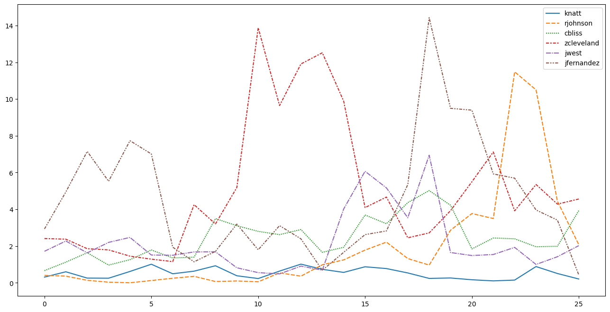
predict_in_window('mosei-bonsu', 26, 30, zip_results, True)
# that Florida International and Liberty game are CTOURN
# https://www.sports-reference.com/cbb/players/michael-osei-bonsu-1/gamelog/2026/ team opponent
10183 Missouri State Sam Houston
10193 Missouri State Western Kentucky
10204 Missouri State Middle Tennessee
10214 Missouri State Florida International
10223 Missouri State Liberty| pname | season | min_total | min_pg | pts_pg | fg_made_pg | fg_attempted_pg | fg_missed_pg | tp_made_pg | tp_attempted_pg | ... | fg_percentage_pg | tp_percentage_pg | ft_percentage_pg | in_conference_rate | eff_pg | team_min_pg | team_fga_pg | team_fta_pg | team_tov_pg | usg_pct | |
|---|---|---|---|---|---|---|---|---|---|---|---|---|---|---|---|---|---|---|---|---|---|
| 0 | mosei-bonsu | 2025-26 | 163 | 32.6 | 19.8 | 8.6 | 12.2 | 3.6 | 0.0 | 0.0 | ... | 0.704918 | 0.0 | 0.565217 | 1.0 | 23.8 | 203.733333 | 54.8 | 22.466667 | 9.2 | 27.445692 |
1 rows × 34 columns
0 34.420582
dtype: float64Games-To-Date
window_size = 1
all_player_names = test_boxscores['pname'].unique()
holder_gtd = {}
a = 1
b = 31 - window_size
for i in range (a,b):
print("Game",a,"to Game",i+window_size)
for p in all_player_names:
holder_gtd[p] = []
for i in range (a,b):
holder_gtd[p].append(predict_in_window(p, a, i+window_size, zip_results)[0])Game 1 to Game 2
Game 1 to Game 3
Game 1 to Game 4
Game 1 to Game 5
Game 1 to Game 6
Game 1 to Game 7
Game 1 to Game 8
Game 1 to Game 9
Game 1 to Game 10
Game 1 to Game 11
Game 1 to Game 12
Game 1 to Game 13
Game 1 to Game 14
Game 1 to Game 15
Game 1 to Game 16
Game 1 to Game 17
Game 1 to Game 18
Game 1 to Game 19
Game 1 to Game 20
Game 1 to Game 21
Game 1 to Game 22
Game 1 to Game 23
Game 1 to Game 24
Game 1 to Game 25
Game 1 to Game 26
Game 1 to Game 27
Game 1 to Game 28
Game 1 to Game 29
Game 1 to Game 30holder_rolling_df = pd.DataFrame.from_dict(holder_rolling)
holder_rolling_df_ranked = holder_rolling_df.rank(axis=1, ascending=False)holder_gtd_df = pd.DataFrame.from_dict(holder_gtd)
holder_gtd_df_ranked = holder_gtd_df.rank(axis=1, ascending=False)target_players = ['knatt',
'rjohnson',
'cbliss',
'zcleveland',
'mosei-bonsu',
'jwest', # one of our highest predicted not winners
'jfernandez', #second highest predicted not winner
]
plt.figure(figsize=(16,8))
myplot = sns.lineplot(holder_gtd_df_ranked[target_players])
myplot.invert_yaxis()
myplot.set_yticks([1,5,10,15,20,25,30,35,40,45,50])
myplot.set_ylabel("Predicted Rank")
myplot.set_xlabel("Games-to-Date (Season 2025-26)")
myplot.set_title("Predicted Player Rank by Games-To-Date (ZIP model)")
plt.show()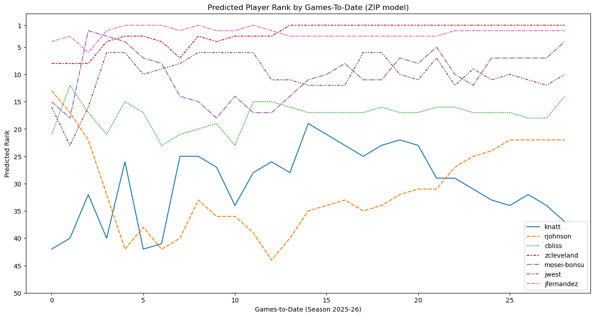
top_10_predicted = prediction_ranks[:10]['pname']
winners = list(test_full_season[test_full_season['award_count'] > 0]['pname'])
plt.figure(figsize=(16,8))
myplot = sns.lineplot(holder_gtd_df_ranked[winners])
# myplot.set_yticks([1,5,10,15,20,25,30])
myplot.set_ylim([0,166])
myplot.invert_yaxis()
myplot.set_ylabel("Predicted Player Rank (1–166, 1 = Best)")
myplot.set_xlabel("Games Included (First N Games)")
myplot.set_title("Predicted Player Rank using First N Games (ZIP)", fontsize=28, fontfamily="Arial")
handles, labels = myplot.get_legend_handles_labels()
fix_names1 = [label + " ★" if label in winners else label for label in labels]
fix_names2 = [label[1:].capitalize() for label in fix_names1]
fix_names3 = ["El Moutaouakkil" + label[2:] if label.startswith("El") else label for label in fix_names2]
myplot.legend(handles, fix_names3, loc="lower right", ncol=3)
myplot.set_xlim([1,28])
myplot.set_xticks([1,5,10,15,20,25])
ax2 = myplot.twinx()
# ax2.set_yticks([1,5,10,15,20,25,30])
ax2.set_ylim([0,166])
ax2.invert_yaxis()
final_predicted_ranks = dict(holder_gtd_df_ranked[winners].iloc[-1])
# tick_positions = list(final_predicted_ranks.values())
tick_positions = np.array(list(final_predicted_ranks.values())) -.01
tick_labels = list(final_predicted_ranks.keys())
tick_fix_names1 = [label[1:].capitalize() + f" ({int(final_predicted_ranks[label])})" for label in tick_labels]
tick_fix_names2 = ["El Moutaouakkil"+ f" ({int(final_predicted_ranks["mel"])})" if label.startswith("El") else label for label in tick_fix_names1]
tick_new_labels = [label + " ★" if label in winners else label for label in tick_fix_names2]
ax2.set_yticks(tick_positions)
ax2.set_yticklabels(tick_new_labels)
plt.axhline(
y = 166/2,
color = 'red',
linestyle = '--',
linewidth = 1.5
)
plt.suptitle(
"(2025–26 NCAA Season)",
fontsize=18,
fontfamily="Arial",
y=.88
)
plt.show()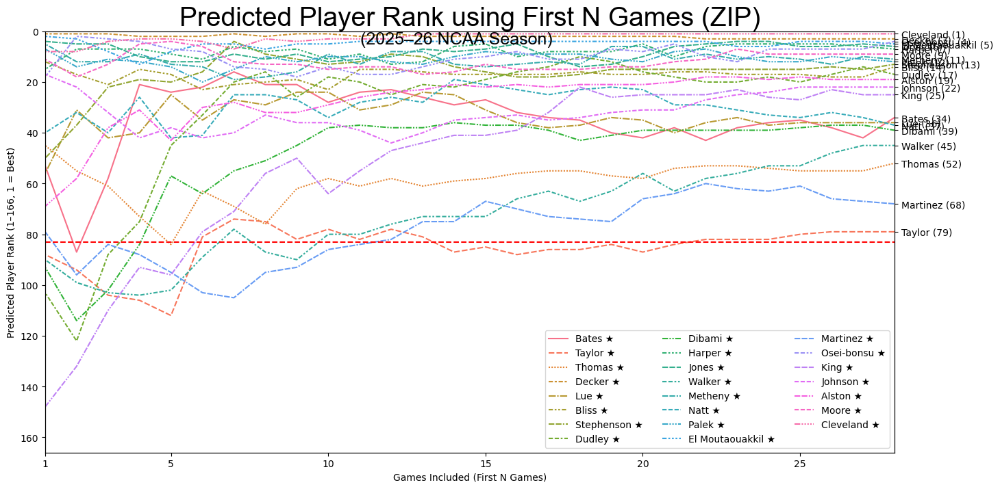
top_10_predicted_28 = holder_gtd_df_ranked.copy().iloc[-1].reset_index().sort_values(by=28)['index'][:10]
winners = list(test_full_season[test_full_season['award_count'] > 0]['pname'])
plt.figure(figsize=(16,8))
myplot = sns.lineplot(holder_gtd_df_ranked[top_10_predicted_28])
myplot.set_yticks([1,5,10,15,20,25,30])
myplot.set_ylim([0,20])
myplot.invert_yaxis()
myplot.set_ylabel("Predicted Player Rank (1–166, 1 = Best)")
myplot.set_xlabel("Games Included (First N Games)")
myplot.set_title("Predicted Player Rank using First N Games (ZIP)", fontsize=28, fontfamily="Arial")
handles, labels = myplot.get_legend_handles_labels()
fix_names1 = [label + " ★" if label in winners else label for label in labels]
fix_names2 = [label[1:].capitalize() for label in fix_names1]
fix_names3 = ["El Moutaouakkil" + label[2:] if label.startswith("El") else label for label in fix_names2]
myplot.legend(handles, fix_names3, loc="lower right", ncol=3)
myplot.set_xlim([1,28])
myplot.set_xticks([1,5,8,10,15,20,25])
ax2 = myplot.twinx()
# ax2.set_yticks([1,5,10,15,20,25,30])
ax2.set_ylim([0,20])
ax2.invert_yaxis()
final_predicted_ranks = dict(holder_gtd_df_ranked[top_10_predicted_28].iloc[-1])
# tick_positions = list(final_predicted_ranks.values())
tick_positions = np.array(list(final_predicted_ranks.values())) -.01
tick_labels = list(final_predicted_ranks.keys())
tick_fix_names1 = [label[1:].capitalize() + f" ({int(final_predicted_ranks[label])})" for label in tick_labels]
tick_fix_names2 = ["El Moutaouakkil"+ f" ({int(final_predicted_ranks["mel"])})" if label.startswith("El") else label for label in tick_fix_names1]
tick_new_labels = [label + " ★" if label in winners else label for label in tick_fix_names2]
ax2.set_yticks(tick_positions)
ax2.set_yticklabels(tick_new_labels)
myplot.axvline(8, color='red', linestyle='--', linewidth=2, label='Age 18')
plt.suptitle(
"(2025–26 NCAA Season)",
fontsize=18,
fontfamily="Arial",
y=.88
)
plt.show()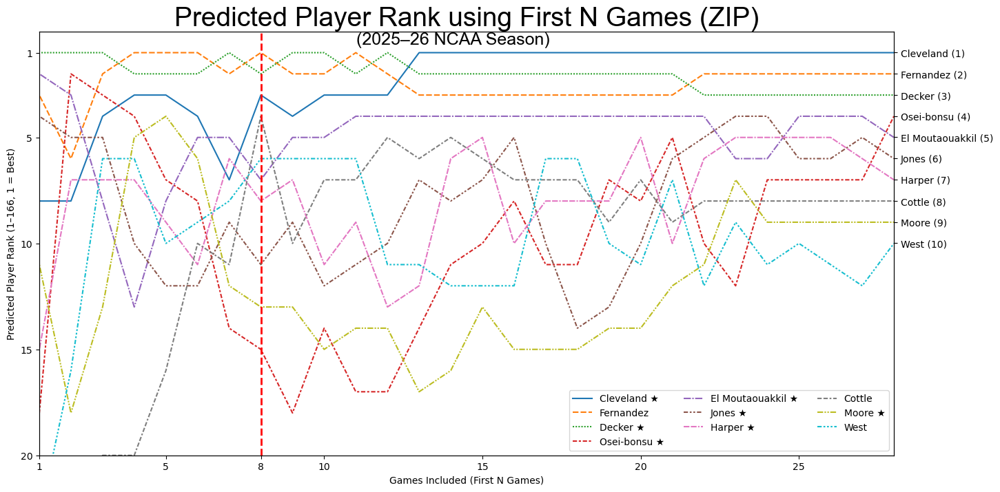
plt.figure(figsize=(16,8))
myplot = sns.lineplot(holder_gtd_df_ranked[['rjohnson']])
# myplot.set_ylim([0,30])
myplot.invert_yaxis()
# myplot.set_yticks([1,5,10,15,20,25,30])
myplot.set_ylabel("Predicted Rank (From 1 to 166)")
myplot.set_xlabel("Games-to-Date (Season 2025-26)")
myplot.set_title("Predicted Player Rank by Games-To-Date (ZIP model)")
handles, labels = myplot.get_legend_handles_labels()
new_labels = [label + " ★" if label in winners else label for label in labels]
myplot.legend(handles, new_labels, loc="lower right", ncol=2)
# myplot.set_xlim([1,28])
plt.show()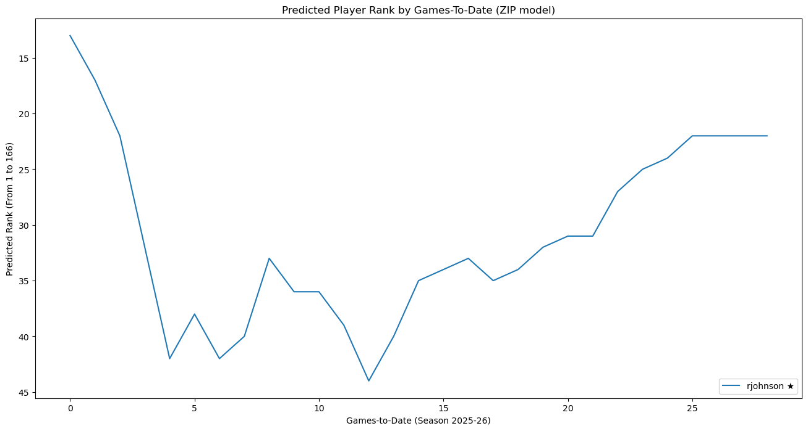
plt.figure(figsize=(16,8))
myplot = sns.lineplot(holder_gtd_df_ranked[winners])
# myplot.set_ylim([0,30])
myplot.invert_yaxis()
# myplot.set_yticks([1,5,10,15,20,25,30])
myplot.set_ylabel("Predicted Rank (From 1 to 166)")
myplot.set_xlabel("Games-to-Date (Season 2025-26)")
myplot.set_title("Predicted Player Rank of Award Winners by Games-To-Date (ZIP model)")
handles, labels = myplot.get_legend_handles_labels()
new_labels = [label + " ★" if label in winners else label for label in labels]
# myplot.legend(handles, new_labels, loc="lower right", ncol=2)
handles, labels = myplot.get_legend_handles_labels()
fix_names1 = [label + " ★" if label in winners else label for label in labels]
fix_names2 = [label[1:].capitalize() for label in fix_names1]
fix_names3 = ["El Moutaouakkil" + label[2:] if label.startswith("El") else label for label in fix_names2]
myplot.legend(handles, fix_names3, loc="lower right", ncol=3)
# myplot.set_xlim([1,28])
plt.show()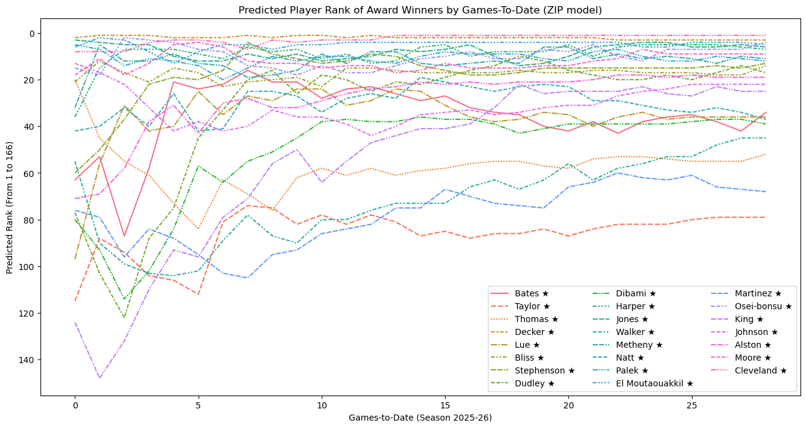
plt.figure(figsize=(16,8))
myplot = sns.lineplot(holder_gtd_df_ranked[['zcleveland']])
# myplot.set_ylim([0,30])
myplot.invert_yaxis()
# myplot.set_yticks([1,5,10,15,20,25,30])
myplot.set_ylabel("Predicted Rank (From 1 to 166)")
myplot.set_xlabel("Games-to-Date (Season 2025-26)")
myplot.set_title("Cleveland game to date rank and rolling rank (ZIP model)")
handles, labels = myplot.get_legend_handles_labels()
new_labels = [label + " ★" if label in winners else label for label in labels]
myplot.legend(handles, new_labels, loc="lower right", ncol=2)
# myplot.set_xlim([1,28])
sns.lineplot(holder_rolling_df_ranked['zcleveland'])
plt.show()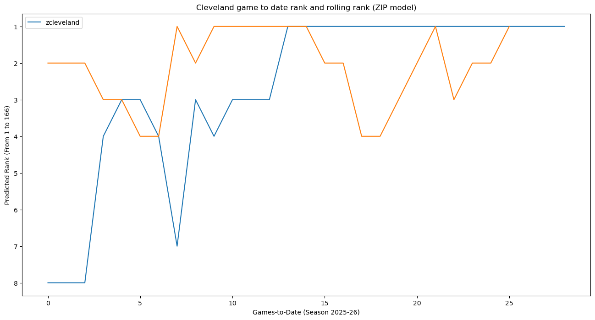
# holder_gtd_df_ranked.info()
top_winners = list(test_full_season[test_full_season['award_count'] > 1]['pname'])
# highlights = ['zcleveland']
winner_rank_zoom = holder_gtd_df_ranked.loc[[5,10,15,20,25,28], top_winners].transpose().sort_values(by=28)
# display(round(winner_rank_zoom/166*100, 1))
display(winner_rank_zoom)| 5 | 10 | 15 | 20 | 25 | 28 | |
|---|---|---|---|---|---|---|
| zcleveland | 3.0 | 3.0 | 1.0 | 1.0 | 1.0 | 1.0 |
| mosei-bonsu | 7.0 | 14.0 | 10.0 | 8.0 | 7.0 | 4.0 |
| cbliss | 17.0 | 23.0 | 17.0 | 17.0 | 17.0 | 14.0 |
| rjohnson | 38.0 | 36.0 | 34.0 | 31.0 | 22.0 | 22.0 |
| knatt | 42.0 | 34.0 | 21.0 | 23.0 | 34.0 | 37.0 |
top_10_predicted_28 = holder_gtd_df_ranked.copy().iloc[-1].reset_index().sort_values(by=28)['index'][:10]
winners = list(test_full_season[test_full_season['award_count'] > 0]['pname'])
plt.figure(figsize=(16,8))
myplot = sns.lineplot(holder_gtd_df_ranked[top_winners])
# myplot.set_yticks([1,5,10,15,20,25,30])
myplot.set_ylim([0,166])
myplot.invert_yaxis()
myplot.set_ylabel("Predicted Player Rank (1–166, 1 = Best)")
myplot.set_xlabel("Games Included (First N Games)")
myplot.set_title("Predicted Player Rank Of Award Winners using First N Games (ZIP)", fontsize=28, fontfamily="Arial")
handles, labels = myplot.get_legend_handles_labels()
fix_names1 = [label + " ★" if label in winners else label for label in labels]
fix_names2 = [label[1:].capitalize() for label in fix_names1]
fix_names3 = ["El Moutaouakkil" + label[2:] if label.startswith("El") else label for label in fix_names2]
myplot.legend(handles, fix_names3, loc="lower right", ncol=3)
myplot.set_xlim([1,28])
myplot.set_xticks([1,5,10,15,20,25])
ax2 = myplot.twinx()
# ax2.set_yticks([1,5,10,15,20,25,30])
ax2.set_ylim([0,166])
ax2.invert_yaxis()
final_predicted_ranks = dict(holder_gtd_df_ranked[top_winners].iloc[-1])
# tick_positions = list(final_predicted_ranks.values())
tick_positions = np.array(list(final_predicted_ranks.values())) -.01
tick_labels = list(final_predicted_ranks.keys())
tick_fix_names1 = [label[1:].capitalize() + f" ({int(final_predicted_ranks[label])})" for label in tick_labels]
tick_fix_names2 = ["El Moutaouakkil"+ f" ({int(final_predicted_ranks["mel"])})" if label.startswith("El") else label for label in tick_fix_names1]
tick_new_labels = [label + " ★" if label in winners else label for label in tick_fix_names2]
ax2.set_yticks(tick_positions)
ax2.set_yticklabels(tick_new_labels)
# myplot.axvline(8, color='red', linestyle='--', linewidth=2, label='Age 18')
plt.suptitle(
"(2025–26 NCAA Season)",
fontsize=18,
fontfamily="Arial",
y=.88
)
plt.show()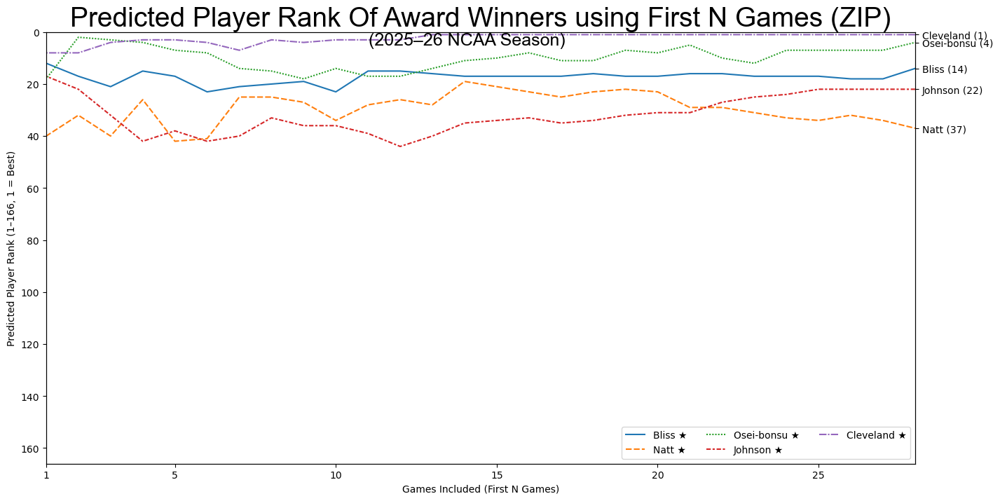
biggest_fall = holder_gtd_df_ranked.copy().transpose()
biggest_fall = biggest_fall.reset_index()
for guy in biggest_fall['index']:
print(guy, int(biggest_fall[biggest_fall['index'] == guy][0] - biggest_fall[biggest_fall['index'] == guy][28]), "*")edibami 41 *
lolayinka -19 *
zjackson -34 *
awilliamson 87 *
cstephenson 47 *
oibrahim -27 *
kbrown -57 *
tsucatzky -21 *
bharris 22 *
rruiz -19 *
animmers -13 *
jmackey 37 *
holayinka 25 *
aclinton -11 *
eerkins-ford 28 *
jhill 3 *
mel 1 *
abryant 15 *
jnash -13 *
adriggers -14 *
ttut -18 *
aanabitarte -19 *
cloy -31 *
bvungo 4 *
tnnadozie -65 *
jfranklin -67 *
mfitzgerald -9 *
iniagu 43 *
khowze -96 *
athomas -32 *
wallen 15 *
kcooper 3 *
abates 29 *
sherron 33 *
wjeffress 9 *
mmartinez 8 *
ddudley 60 *
jfenner -54 *
swilliams 20 *
lthompson -17 *
krowell 19 *
janderson 7 *
zcleveland 7 *
bdecker -1 *
jharper 29 *
cporter -9 *
kmetheny 21 *
rjones -37 *
bkester 3 *
tsorensen -16 *
dgrimes -16 *
tdrain -3 *
zyates -19 *
zcarter 30 *
jshirer -4 *
jsmith 109 *
iihnen -7 *
cloofe -21 *
talston 52 *
ssmith 30 *
tgreen -3 *
klands -11 *
jhall -37 *
ljovanovic -12 *
swykle 9 *
jdent -59 *
mwhitlock 35 *
jcarter -26 *
aoglesby -16 *
jmims 9 *
cmalonga -71 *
gpickens 16 *
jjones -3 *
awrzeszcz -28 *
josborne 53 *
kmullen 16 *
aekwe -27 *
cterrell -9 *
jrandall 41 *
eelliott 57 *
adoyle 12 *
teaglestaff -4 *
cvillegas 1 *
vilic 11 *
pking 99 *
knatt 5 *
jbegg 19 *
dnicholas 9 *
mdann 5 *
cndiaye -2 *
imanning 52 *
jwalker 10 *
jcoleman 22 *
cbeaumont -11 *
jford 36 *
jwest 6 *
kwatson 10 *
ejones -3 *
kthomas -55 *
cblackwell 59 *
csmith -44 *
dtubek -65 *
mmbaye -21 *
cbrooks -60 *
bmontgomery 4 *
jhernandez -27 *
lhayes -54 *
twatson -60 *
thorton 30 *
bkeita 20 *
gnewell -26 *
lhackman 3 *
tmoore 9 *
jedelen 14 *
nboyde 47 *
lsemona 39 *
lodiahi 16 *
bselebangue -15 *
aboone 6 *
cstinnett -22 *
kunseld 13 *
chaffner 42 *
tmurdix -18 *
rmyers 46 *
blue 61 *
fsherman -8 *
rseals -42 *
rjohnson -9 *
scottle 15 *
tsimpson -24 *
ataylor 36 *
donyirimba -28 *
psmith -73 *
krickard -39 *
dwashington -32 *
jharris 71 *
eholland -24 *
cstone -7 *
dcosby -7 *
memory 3 *
thouser 16 *
cbliss 7 *
jbrown 26 *
creilly 0 *
jtaylor 8 *
hemory 18 *
akazanecki 9 *
mellison -29 *
bbaffone -12 *
amcfadden -7 *
jfernandez 2 *
bkebe 16 *
nnjoku -7 *
kpalek -7 *
mosei-bonsu 11 *
twilliams 6 *
zking 20 *
kwilliams 21 *
dsutton -45 *
rcheesman -11 *
tbrooks -35 *
lepes -34 *
akuljuhovic 11 *
cboone -10 *
mcunningham 1 *
aburnett -28 *C:\Users\charl\AppData\Local\Temp\ipykernel_29212\385511446.py:4: FutureWarning: Calling int on a single element Series is deprecated and will raise a TypeError in the future. Use int(ser.iloc[0]) instead
print(guy, int(biggest_fall[biggest_fall['index'] == guy][0] - biggest_fall[biggest_fall['index'] == guy][28]), "*")biggest falls: - khowze -96 - psmith -73 - cmalonga -71 - jfranklin -67 - tnnadozie -65 - dtubek -65 biggest climbs - cblackwell 59 - ddudley 60 - blue 61 - jharris 71 - awilliamson 87 - pking 99 - jsmith 109
second half
window_size = 1
target_players = ['knatt',
'rjohnson',
'cbliss',
'zcleveland',
'mosei-bonsu',
'jwest', # one of our highest predicted not winners
'jfernandez', #second highest predicted not winner
]
holder_gtd_backhalf = {}
a = 1
b = 31 - window_size
for i in range (a,b):
print("Game",a,"to Game",i+window_size)
for p in target_players:
holder_gtd_backhalf[p] = []
for i in range (a,b):
holder_gtd_backhalf[p].append(predict_in_window(p, a, i+window_size, zip_results)[0])Game 1 to Game 2
Game 1 to Game 3
Game 1 to Game 4
Game 1 to Game 5
Game 1 to Game 6
Game 1 to Game 7
Game 1 to Game 8
Game 1 to Game 9
Game 1 to Game 10
Game 1 to Game 11
Game 1 to Game 12
Game 1 to Game 13
Game 1 to Game 14
Game 1 to Game 15
Game 1 to Game 16
Game 1 to Game 17
Game 1 to Game 18
Game 1 to Game 19
Game 1 to Game 20
Game 1 to Game 21
Game 1 to Game 22
Game 1 to Game 23
Game 1 to Game 24
Game 1 to Game 25
Game 1 to Game 26
Game 1 to Game 27
Game 1 to Game 28
Game 1 to Game 29
Game 1 to Game 30plt.figure(figsize=(16,8))
sns.lineplot(holder_gtd_backhalf)
plt.show()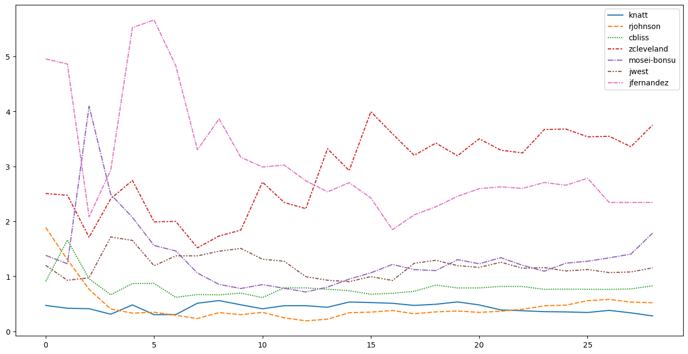
Actual v Predicted
df = pd.DataFrame()
df['Award_Count'] = y_test
df['predicted_awards'] = yhat_mean
df['poisson_predicts'] = reg_models['Poisson'].predict(X_test_full_scaled)
df['player'] = test_full_season['pname']sns.regplot(data=df, x='Award_Count', y='predicted_awards')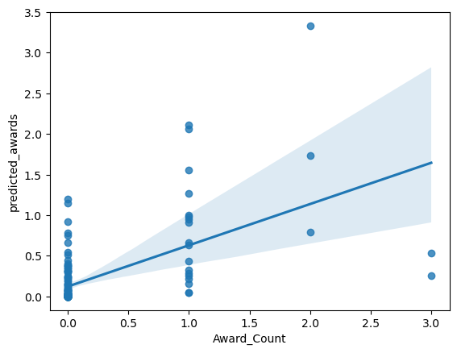
plt.figure(figsize=(16, 8))
m, b = np.polyfit(df['Award_Count'], df['predicted_awards'], 1)
# scatter
plt.scatter(
df['Award_Count'],
df['predicted_awards'],
alpha=0.7,
s=60,
label='Top 15 Predicted Players'
)
# 45-degree line
min_val = min(df['Award_Count'].min(), df['predicted_awards'].min())
max_val = max(df['Award_Count'].max(), df['predicted_awards'].max())
plt.plot(
[min_val, max_val],
[min_val, max_val],
linestyle='--',
linewidth=2,
color='black',
label='Perfect Prediction'
)
x_vals = np.array([min_val, max_val])
y_vals = m * x_vals + b
# trend line
x_vals = np.array([min_val, max_val])
y_vals = m * x_vals + b
plt.plot(
x_vals,
y_vals,
linewidth=2,
color='orange',
label='Trend Line'
)
# label top players
top_players = df.sort_values(by='predicted_awards', ascending=False).head(15).copy()
# top_players['pretty_name'] = [label + " ★" if label in winners else label for label in top_players['player']]
top_players['pretty_name'] = [label[1:].capitalize() for label in top_players['player']]
top_players['pretty_name'] = ["El Moutaouakkil" + label[2:] if label.startswith("El") else label for label in top_players['pretty_name']]
texts = []
for i in range(len(top_players)):
actual = top_players['Award_Count'].iloc[i]
pred = top_players['predicted_awards'].iloc[i]
name = top_players['pretty_name'].iloc[i]
texts.append(
plt.text(
actual,
pred,
name,
fontsize=18,
fontweight='bold'
)
)
# fix overlapping labels
adjust_text(
texts,
arrowprops=dict(arrowstyle='-', color='gray', lw=0.5)
)
plt.xlabel("Actual Awards", fontsize=20, fontweight='bold')
plt.ylabel("Predicted Awards", fontsize=20, fontweight='bold')
plt.title("Actual vs Predicted Awards (ZIP Model)", fontsize=28, fontweight='bold')
plt.legend(loc='upper left')
plt.grid(alpha=0.3)
plt.tight_layout()
plt.show()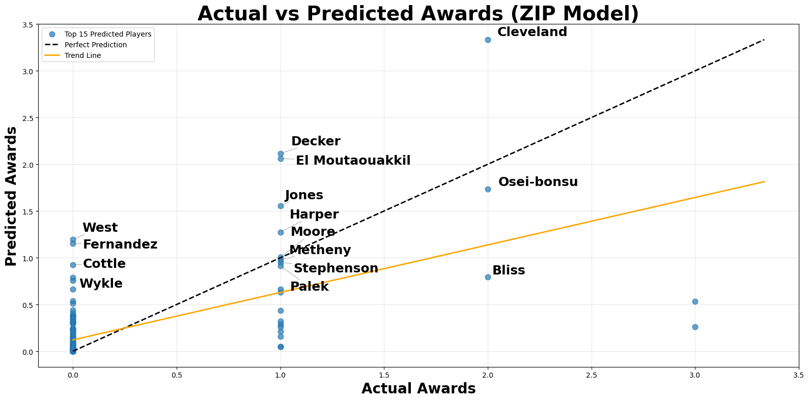
sns.scatterplot(data=test_full_season, x='eff_pg', y='yhat')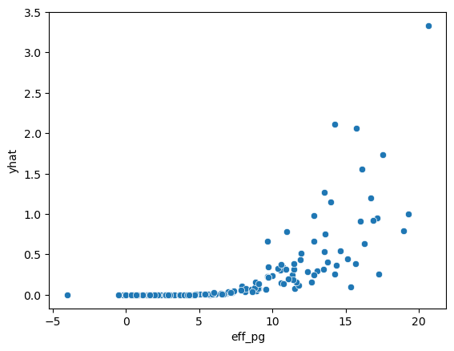
resid = test_full_season[['yhat']].copy()
resid['resid'] = zip_results.resid
sns.residplot(data=resid, y='resid', x='yhat', lowess=True, line_kws=dict(color="r"))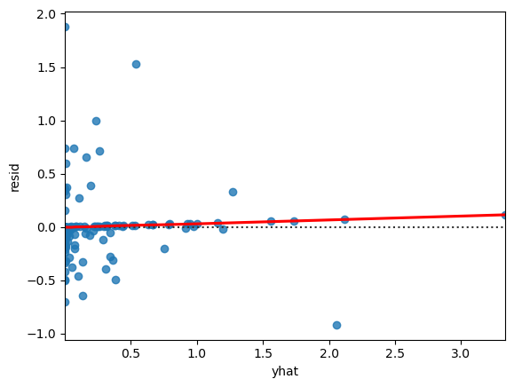
Other
mask_winner = test_full_season['award_count'] > 1
test_full_season[mask_winner][['pname', 'award_count', 'yhat']].sort_values(by='award_count', ascending=False)| pname | award_count | yhat | |
|---|---|---|---|
| 100 | knatt | 3.0 | 0.260086 |
| 132 | rjohnson | 3.0 | 0.533064 |
| 30 | cbliss | 2.0 | 0.794043 |
| 124 | mosei-bonsu | 2.0 | 1.733371 |
| 162 | zcleveland | 2.0 | 3.333688 |
# what is our biggest predicited non award winner
mask_no_awards = test_full_season['award_count'] == 0
mask_positive_yhat = test_full_season['yhat'] > 1
test_full_season[mask_no_awards & mask_positive_yhat][['pname','team','yhat']].sort_values(by='yhat', ascending=False)| pname | team | yhat | |
|---|---|---|---|
| 93 | jwest | UTEP | 1.195921 |
| 75 | jfernandez | Delaware | 1.153132 |
Misc. Helpers
Generate model string
predictors = X_train_scaled_df.columns.tolist()
formula = "award_count ~ " + " + ".join(predictors)
print(formula)award_count ~ dreb_pg + oreb_pg + ast_pg + stl_pg + blk_pg + fg_attempted_pg + fg_made_pg + ft_attempted_pg + ft_made_pg + tov_pg + team_fga_pg + team_fta_pg + team_tov_pg